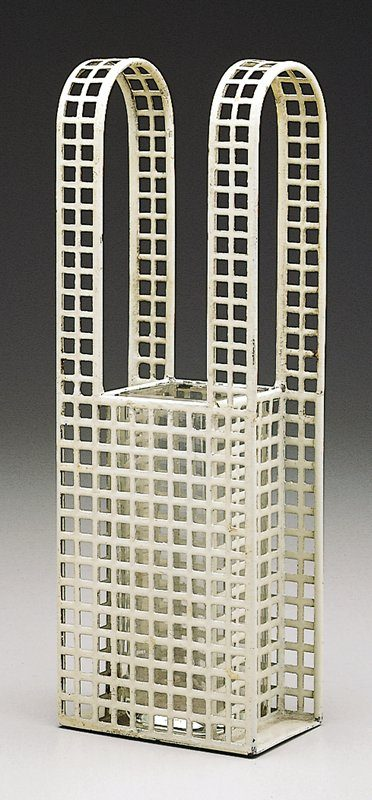

References / Product / 230
Lattice bud vase (Gitterwerk)
Koloman Moser’s small vase for the Wiener Werkstätte is a box of white-painted sheet metal pierced with a regular grid of square holes, with two lattice loops as handles.
- Source
- Minneapolis Institute of Art: Bud vase, 98.276.247a, b
- Creator
- Koloman Moser (designer); Wiener Werkstätte (manufacturer)
- Made
- c. 1904–1906
- Style
- Vienna Secession (agent-proposed, not yet reviewed by a person)
- Moods
- Geometric, precise, austere
- Evidence
- Downloaded and inspected the Minneapolis Institute of Art photograph of object 98.276.247a, b (372 × 800 px, the largest rendition the museum serves without an application). Other Gitterwerk vases by Moser differ in shape and colour.
- Reviewed
- Rights
- Open license, stored. License: public domain. Rights policy
Context
Mia records the bud vase as designed by Koloman Moser and made by the Wiener Werkstätte, c. 1904–1906, in painted metal and glass, 21.59 × 7.62 × 5.08 cm, stamped “Wiener Werkstätte” on the bottom. Mia 98.276.247a, b.
Mia describes Gitterwerk (gridwork) objects as made from sheets of base metal perforated with a grid, so that the grid is both the structure and the decoration. Hoffmann used the same technique; see Hoffmann’s lattice basket. Mia 98.276.65.
Observed
- The body is a tall, narrow rectangular box of white-painted metal, perforated with a regular grid of small square holes of equal size.
- Two tall loops of the same perforated strip rise from the two long sides and end in round arches, like two handles side by side.
- A clear glass liner shows through the holes.
- The holes run in straight rows and columns up to the edges; the metal between them forms thin bars of equal width.
- The paint is chipped in places along the edges and at the base.
Why it belongs
The object is the style’s square lattice with nothing else added: one module, repeated, gives the whole form. The only curve is the arch at the top of each loop.
White paint rather than silver keeps it flat and graphic, close to a printed grid.
Borrow
Use a grid of small square cut-outs with bars of equal width as a border, a background band, or a frame.
Let a lattice band stand alone on a plain white ground, without shadows or gloss.
Measured
Machine-extracted by tools/image-traits.py on . Full measurement.
- Mean chroma
- 0.05
- Palette
- #d7d1bc 17%
- #282727 17%
- #383736 12%
- #eceae7 11%
- #d8d4d2 8%
- #464542 4%
- #928f7b 3%
- #a19c84 3%

